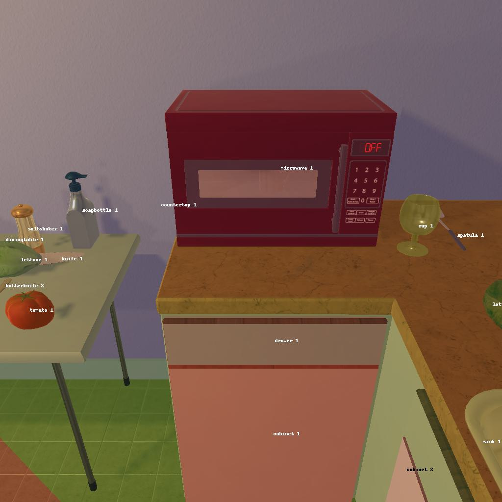

---------------------------------------------------------task: 14---------------------------------------------------------
--------------------------------------------------------------------------------------------------------------------------------------------------------------------
--------------------------------------------------------------------------------------------------------------------------------------------------------------------
Step:--------------------------------------------------------------------------2-------------------------------------------------------------------------------
----------------------------------------
VLM Prompt:
Image1:
Image2:
Image3:
**Instruction**
1. Analyze the provided image to identify all visible household objects, focusing on those relevant to the task description "put a cool apple in countertop."
2. Use the analysis of the image and the task hint "The agent must find an object of the desired type, pick it up, go to a fridge, cool the object with the fridge, then find the correct location to place it, and put it down there. The agent does not need to use the fridge button or open the fridge to cool the object, and the agent just needs to do action that is "cool the object with the fridge"." to answer the question: what is the most reasonable action in the choices for the task description "put a cool apple in countertop"?
4. Decide and write the answer using the template: The answer is: (i): , where i is the real number. If there is no desired object in the image, search every place based on **Initial Observation** to find the object. And if no one is exactly correct, choose a similar answer.
**Initial Observation**
You are in the middle of a room. Looking quickly around you, you can see microwave (1), countertop (1-2), cabinet (1-11), diningtable (1), drawer (1-3), sink (1), sinkbasin (1), toaster (1), stoveburner (1-4), fridge (1), coffeemachine (1), garbagecan (1)
**Answer Choices**
(1): go to microwave 1
(2): go to countertop 1
(3): go to diningtable 1
(4): go to drawer 1
(5): go to sink 1
(6): go to cabinet 2
(7): go to cabinet 3
(8): go to sinkbasin 1
(9): go to cabinet 4
(10): go to cabinet 5
(11): go to drawer 2
(12): go to countertop 2
(13): go to toaster 1
(14): go to cabinet 6
(15): go to stoveburner 1
(16): go to cabinet 7
(17): go to stoveburner 2
(18): go to stoveburner 3
(19): go to stoveburner 4
(20): go to drawer 3
(21): go to cabinet 8
(22): go to cabinet 9
(23): go to cabinet 10
(24): go to coffeemachine 1
(25): go to cabinet 11
(26): go to garbagecan 1
(27): open cabinet 1
(28): close cabinet 1
(29): examine cabinet 1
**Answer**
Let's think step by step by following the instructions.
----------------------------------------
----------------------------------------
Original Response:
Firstly, the task description is "put a cool apple in countertop." For this task, we need to find an apple, then cool it using the fridge, and finally put it on the countertop.
From the **Initial Observation**, there is no mention of an apple being in sight, so we need to search for it.
According to the task hint, we do not need to interact with the fridge using a button or by opening it; we just need to perform an action that cools the object with the fridge.
Since the images provided do not show any apples, and based on the initial observation, the apple could be in cabinets or drawers as these are typical storage places for fruits in a kitchen.
Thus, the most reasonable action would be to first search the cabinets or drawers for the apple.
From the given answer choices, the actions that involve searching for an apple are:
(6): go to cabinet 2
(7): go to cabinet 3
(9): go to cabinet 4
(10): go to cabinet 5
(14): go to cabinet 6
(16): go to cabinet 7
(21): go to cabinet 8
(22): go to cabinet 9
(23): go to cabinet 10
(25): go to cabinet 11
(4): go to drawer 1
(11): go to drawer 2
(20): go to drawer 3
Since we cannot determine which cabinet or drawer the apple is in without further information, we would choose one of the actions that involve searching. As the agent is in the middle of the room and there is no indication of the proximity of the cabinets or drawers, any of these search actions could be reasonable.
Therefore, we can select one of the actions that involve searching for the apple, for example:
The answer is: (6): go to cabinet 2
----------------------------------------
----------------------------------------
>>> Refine Original VLM Response and Get Pure Action: go to cabinet 2
----------------------------------------
-----------------------------------------------------------------
Running time: 16.23792052268982 seconds
Total Money: 8.36198
-----------------------------------------------------------------
-----------------------------------------------------------------
Text Observation:You arrive at loc 6. The cabinet 2 is closed.
-----------------------------------------------------------------
UNSUCCEED